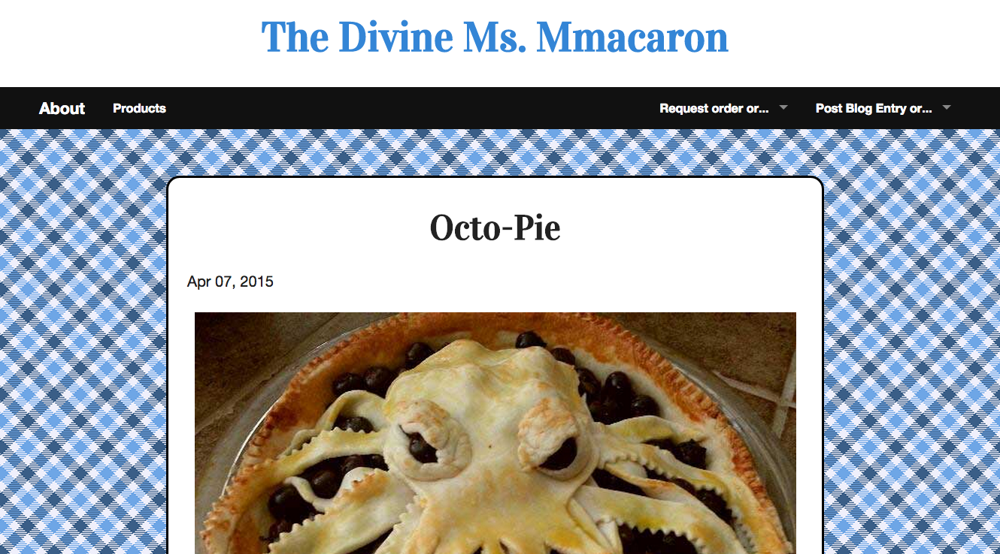

Full Stack Ruby on Rails
The Divine Ms. Mmacaron
This project is for a friend in California who wanted a personal blog to discuss baking methods/techniques, give reviews on dessert shops, and also to have a place for friends and family to request informal orders from her. Deployment and final styling pending.
Features include:
- Login and Registration with Validations: only necessary if someone wants to comment on blog entries or place order requests. Password encryption in place.
- Admin Controls: allow admins to author blog entries, list new products, review orders in a table, or view list of users and their info.
- Optional images: blog entries and product listings have the option to upload an image to accompany the content.
- Truncation of blog entries on the main page, with a read more link to the stand alone blog entry. Blog title also links to the show page.
- Order Request Form: allows anyone registered and logged in to request an order from her. Starting out this is informal for friends and family, a shopping cart may be added later if she wants to expand from a hobby to a business
- Secured access to pages: unauthorized access attemps are redirected to the root route.
- Comments: logged in users can comment on blog entries on the show page of each. They are then displayed under the blog entry in ascending order.
- Responsive Design and Layout: using Foundation framework, I was able to have a nice top nav bar on the main page which sticks to the top once you've moved past the logo. It also allowed me to have products listed in a block grid layout. The background image on the main blog page is fixed for a cleaner scrolling experience.
- Most importantly, a happy client
